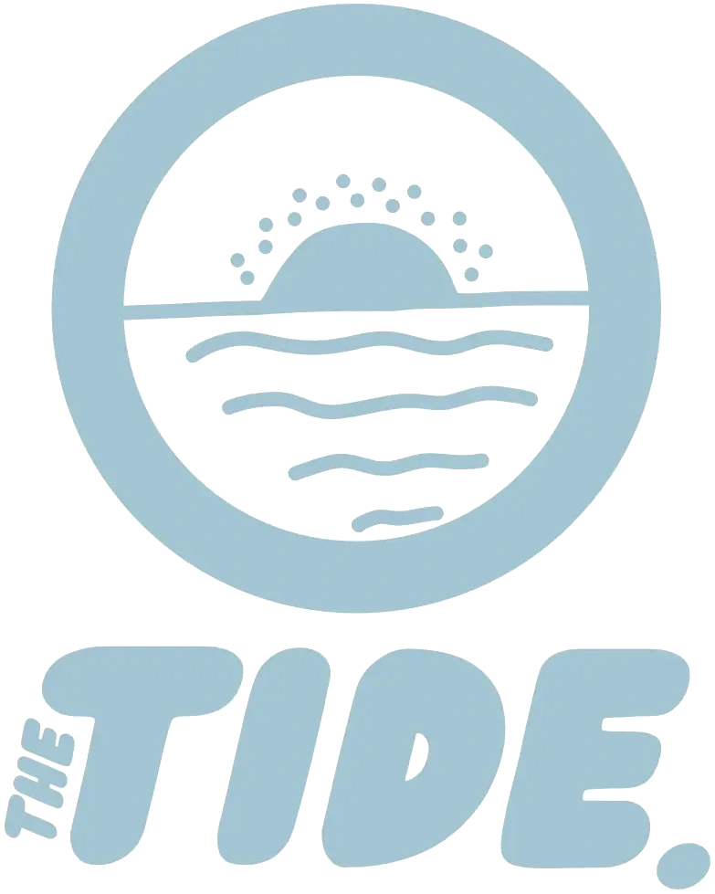

Read by hundreds of Coasties
The Coast's newsletter
Your week
on the Coast.
Local stories, news & events — every week.
thetide.co.nz
Free

Read by hundreds of Coasties
The Coast's newsletter
Local stories, news & events — every week.